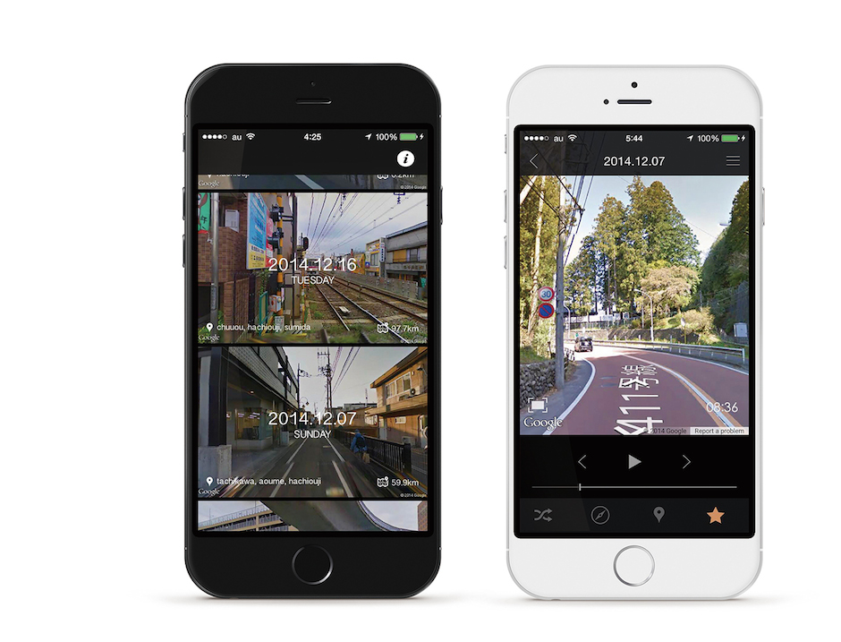
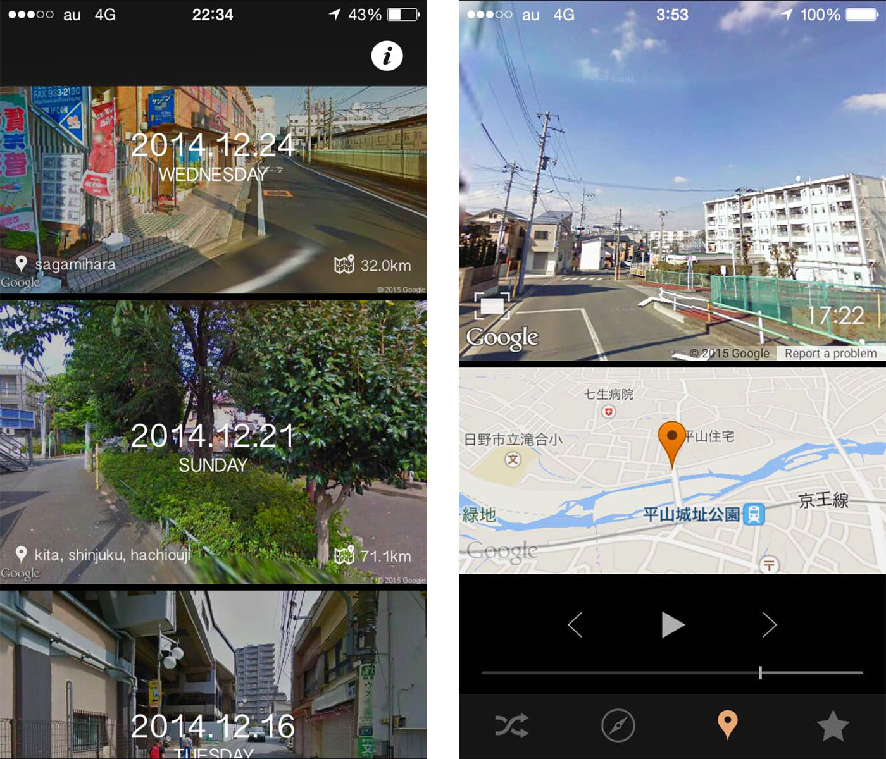
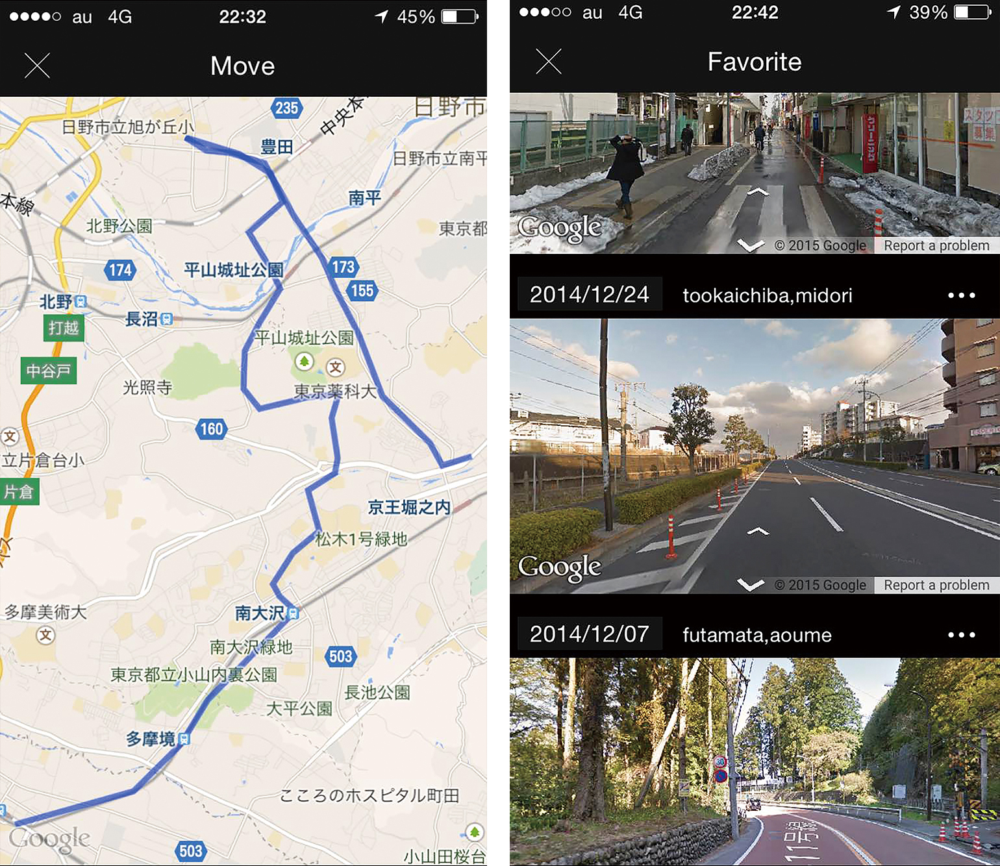

Roadscapeはその日過ごした場所の景観を自動で記録するライフログアプリです。 追跡記録されたユーザーの移動履歴をもとに、各地点のパノラマ画像を取得し表示します。
自身の卒業研究の一環として制作しました。
アプリを一度起動すればユーザーは何もする必要はありません。バックグラウンドで取得した記録は日記形式にまとめられ、自動記録されたその日の景観をいつでも振り返る事が出来ます。
他のGPSロガーアプリ同様その日の軌跡を見る事が出来ます。また、気に入った景色をお気に入りに登録することもできます。
旅行やドライブ・サイクリングでの手軽な記録に、日常で過ごしている場所への再発見に使ってみてください。